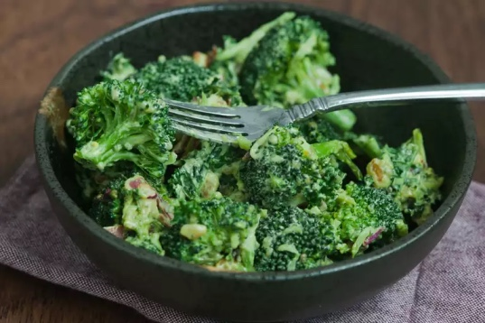

Broccoli Salad

~ Broccoli Bliss ~
Try out this yummy broccoli salad that uses an interesting combination of fruits, vegetables, and meats. It's a must try!
Prep Time: 15 mins | Cook Time: 10 mins | Total Time: 25 mins | Servings: 8
Ingredients:
- 1/2 pound bacon
- 2 heads fresh broccoli
- 1 small red onion
- 3/4 cup raisins
- 3/4 cup sliced almonds
- 1 cup mayonnaise
- 1/2 cup white sugar
- 2 tablespoons white wine vinegar
Steps:
- Gather all ingredients.
- Place bacon in a deep skillet and cook over medium-high heat until evenly brown, 7 to 10 minutes. Cool and crumble.
- Cut the broccoli into bite-sized pieces and cut the onion into thin bite-sized slices. Combine with the bacon, raisins, and almonds and mix well.
- To prepare the dressing, mix the mayonnaise, sugar, and vinegar together until smooth.
- Stir into the salad.
- Let chill before serving, if desired.
Nutrition (Per Serving): 374 calories | 27g fat | 29g carbs | 7g protein